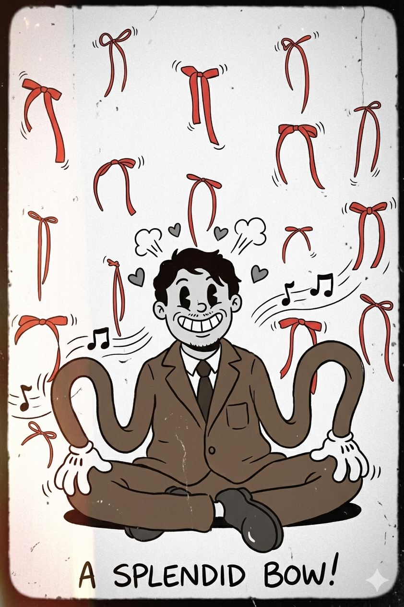

現在の職業
営業職（ポータルサイト運営の営業）

AI時代に営業職からエンジニアを目指す学習記録
営業職（ポータルサイト運営の営業）
中学生ぐらいの時からエンジニアという職に興味を持っていました。元々エンジニアになりたい思いはあったのですが、営業職で社会の基礎を経験したいと考えていました。
30歳を過ぎ、今のままでは楽しい人生を送ることができないと思い、元々興味のあったエンジニアの勉強を開始しました。
✅ 完了（2/9 - 3/8）
Python、JavaScript、HTML/CSSの基礎を学習
🔄 進行中（3/14 -）
自己紹介ページ作成、JavaScriptで動くものを作成予定
⏳ 未着手
React、より高度なWebアプリケーション開発
学習期間: 2026年2月9日 〜 3月8日（28日間）